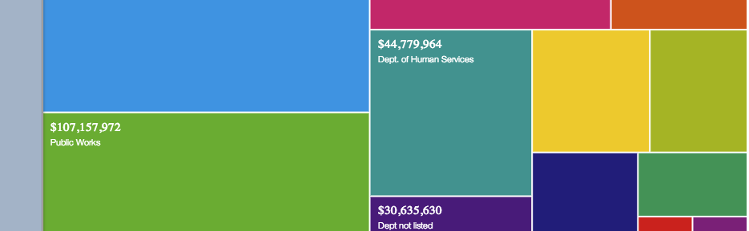
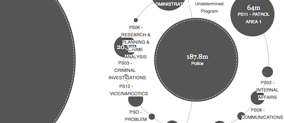

Explore your budget.
Open Budget Oakland promotes a deeper understanding of the city budget, enabling citizens, officials, and other stakeholders to engage in more informed dialogue about how the City of Oakland currently works and how it should in the future.
Help build this!
Developers and data geeks needed. We meet Tuesdays 6–9:30pm at City Hall as part of OpenOakland hack night.
How would you use Open Budget?
We're trying to build a tool that's useful to average citizens, community advocates, and city officials. We want your ideas. What would you visualize? Who should be part of the discussion?
Open Budget © 2013